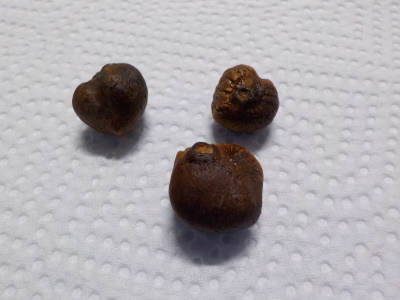
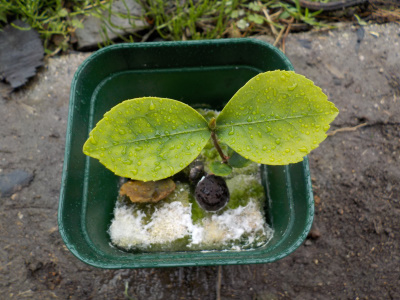
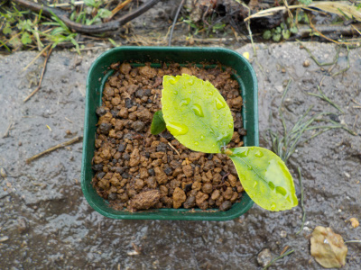
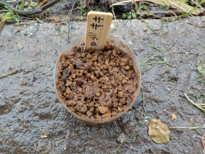

白系のサザンカを増やしたかったので種を採りました。
更新日 : 2020/11/08

採るのが遅かったみたいで3個だけしか見つけれませんでした。

花はこんな感じ。（昔の写真です。）
種なので同じ色の花が咲くとは限りませんが、白っぽい花が咲くでしょうと勝手に予想しています。
更新日 : 2020/11/08

採るのが遅かったみたいで3個だけしか見つけれませんでした。
花はこんな感じ。（昔の写真です。）
種なので同じ色の花が咲くとは限りませんが、白っぽい花が咲くでしょうと勝手に予想しています。
更新日 : 2021/04/04

水耕栽培は土を使わないのでクリーンな感じがしますが、長期間になるとカビとか藻が生えて汚くなりますね。
汚いのを置いておくのも嫌なので土に植替えました。

植物は土が一番合いますね。

サザンカの種蒔きもしました。
種は親と違う花が咲くのでいいですよね。
どんな花がさくんだろうと思うと楽しいです。
サザンカが咲くと、冬の準備をしなきゃって思います。